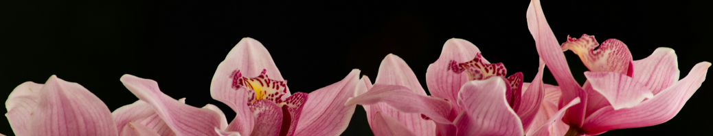
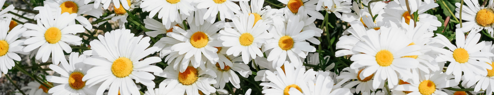
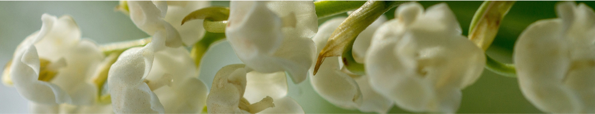
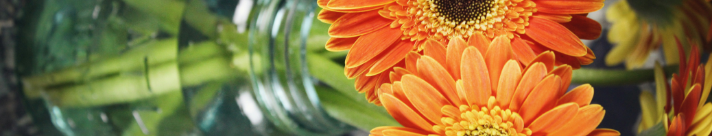
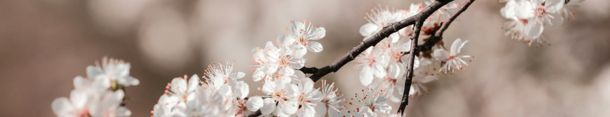

Descubra o simbolismo por trás das flores na Floralia: De rosas vermelhas apaixonadas a lírios
brancos que representam pureza, mergulhe nos significados fascinantes das flores e suas conexões
profundas com emoções, eventos e culturas ao redor do mundo
Explore os Significados Florais!
Amor e Romance
As rosas vermelhas são o símbolo universal do amor apaixonado e da paixão ardente.
Elas representam desejo, romance e o calor do coração. Dar uma rosa vermelha é uma
maneira intemporal de expressar seu amor incondicional.
As tulipas vermelhas simbolizam amor eterno e romance profundo. Elas são uma escolha
elegante e vibrante para declarar seu amor de forma duradoura e ardente.

As orquídeas são flores exóticas que representam beleza, desejo e luxúria. Elas são
um símbolo de elegância e sensualidade, perfeitas para expressar um amor apaixonado
e sofisticado.
Felicidade e Alegria
Os girassóis são flores radiantes que representam felicidade, vitalidade e energia
positiva. Sua forma única de seguir o sol simboliza uma atitude positiva em relação
à vida e a capacidade de superar desafios com otimismo.

As margaridas são flores simples e encantadoras que simbolizam pureza, inocência e
alegria. Elas são um lembrete delicado de apreciar as pequenas coisas na vida e
encontrar felicidade nas experiências cotidianas.

Os lírios do vale são flores delicadas que representam doçura, pureza e felicidade
renovadora. Seu perfume suave e suas flores encantadoras evocam uma sensação de
renovação e alegria na primavera.
Gratidão e Apreciação
Os crisântemos são flores que simbolizam gratidão, respeito e admiração. Eles são
frequentemente dados como presentes de agradecimento e expressam reconhecimento
pelas contribuições de alguém.

As gerberas são flores alegres que expressam alegria e reconhecimento. Sua variedade
de cores vibrantes e seu aspecto radiante transmitem uma sensação de gratidão e
apreço.
As hortênsias são flores que representam agradecimento sincero e sentimentos de
apreço. Sua beleza exuberante e suas flores abundantes são um símbolo de gratidão e
respeito.
Tristeza e Condolências
Os lírios brancos são flores que simbolizam paz, pureza e condolências. Eles são
frequentemente usados em arranjos florais para funerais e expressam sentimentos de
amor e respeito pela pessoa falecida.

As flores de cerejeira são símbolos de beleza efêmera e lembrança amorosa. Elas são
associadas à ideia de apreciar a beleza da vida e lembrar com carinho das memórias
compartilhadas.
Os lírios calla são flores que simbolizam respeito e memória eterna. Sua elegância
atemporal e sua presença serena oferecem conforto e apoio durante momentos de luto.